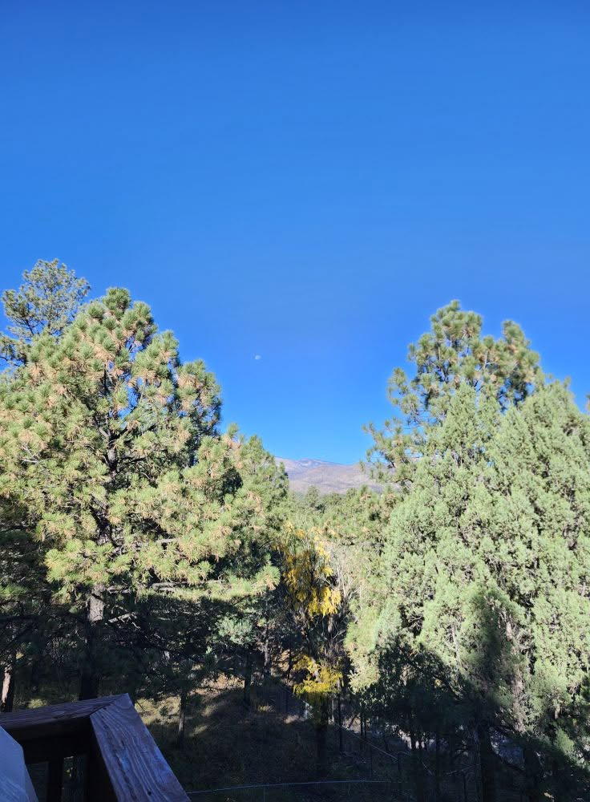
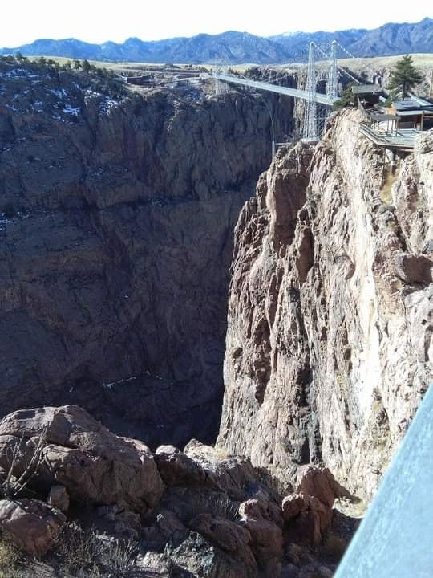
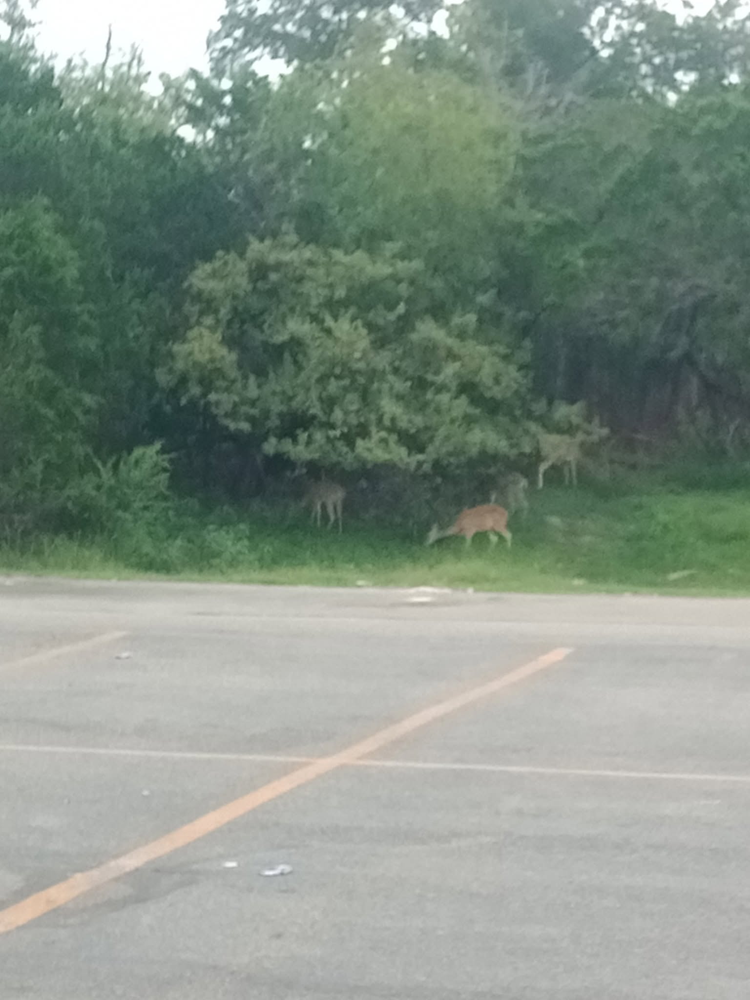
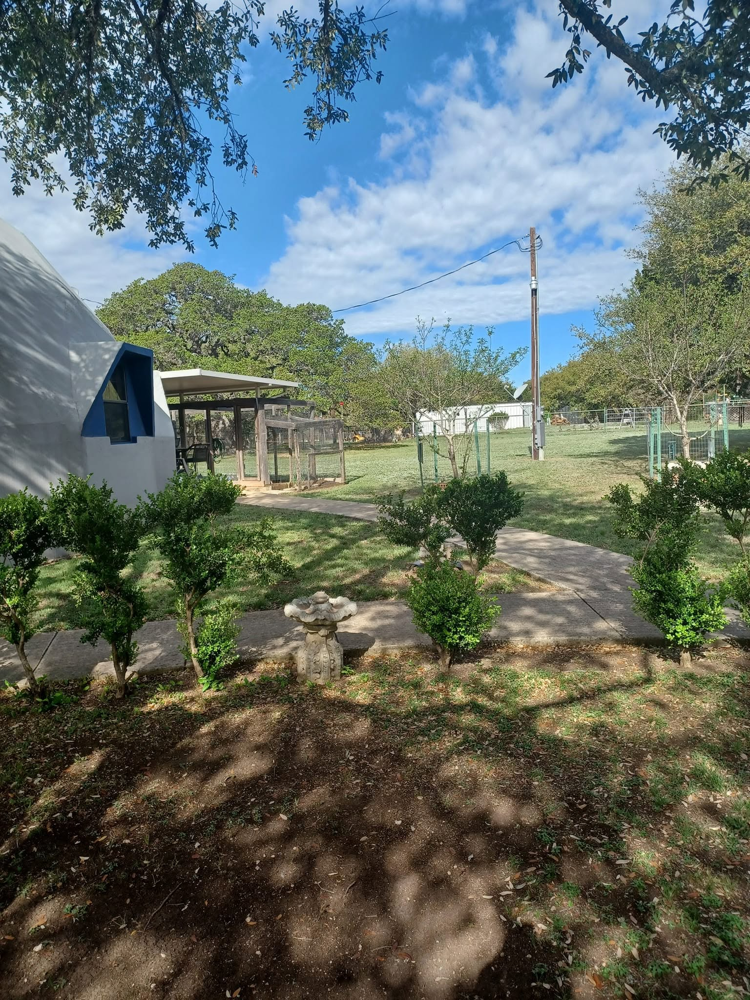
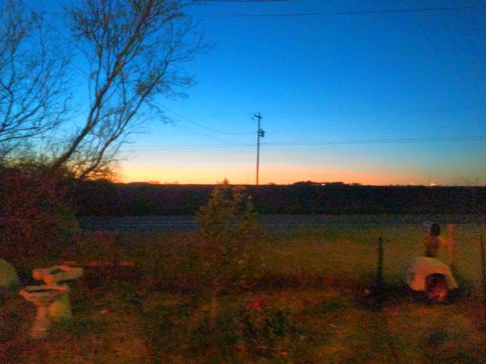
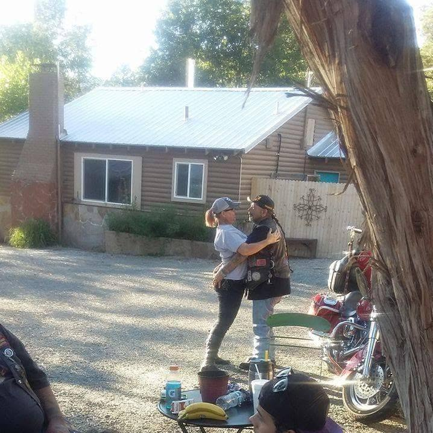

My Memories of Travels
This is a sample of my memories I have captured while traveling. These memories are irreplacable as most of the people who were on these travels with me are no longer alive. Most of these trips were taken by motorcycle with my late husband and his family. We traveled to various places across 3 states multiple times. I chose pictures that I can look at and isntantly remember the time and place almost like it was as recent as yesterday.

BAM's Cabin
Staying at BAM's cabin one Winter
This is a picture taken when we stwayed at my brother in laws cabin in Ruiodoso in 2012. It was the first visit I made to Ruiodoso, New Mexico. I look at this and I can remember being in awe of the view from the balcony on the third floor right oputside the dining room. I can remember the smell of those trees and feel the chill in the air because winter was coming. I am still in awe of how large the trees there are.

The Royal Gorge Bridge
Royal Gorge Bridge and Park
This was taken before we entered the Royal Gorge Park. The park is located west of Canon City Colorado. This bridge is America's highest suspension bridge. It was built in 1929. The bridge is still open for foot traffic if you do not mind taking a very long hike. The day we visited I faced my fear of heights by walking across the bridge! They let the guys ride their motorcycles acrtoss the bridge that day. I was not brave enough for that as I knew the bridge would start to sway and move as the bikes crossed the bridge. From the bridge I could not see the train running around the base of the Gorge.

Canyon Lake
Outside a Restraunt in Canyon Lake
Visiting friends in Canyone Lake we went for dinner at a restraunt on the lake. Directly outside I took this picture in the parking lot. It was amazing how the entire community co-exist in nature. That trip was a refreshing senek away over a weekend.

Bandera House Yard
The yard of the house in Bandera
One weekend we had a short getaway to Bandera, staying in the house of a friend. This particular trip was taken while my husband was recovering from brain surgery. This was one of our final trips together. There are not words to tell how special these memories are.

My Front Yard
Taken from my porch
This picture was taken from my front porch watching the sunset with my husband during his last excursion out of the house. When I look at this I can still hear him telling me how perfect this day was and how much all of our journeys together meant to him. And I can feel the forboading of knowing that time is limited and every frame of every moment in our story together was so very important.

My Favorite Memory
This is my favorite memory
Out of all of the memories I have this one is my very favorite. This trip was a graduation gift for my oldest son. My son took this picture without our knowledge because he always wanted to remember how much his parents loved each other. I look at this picture and see us still very in love after 2 decades together.